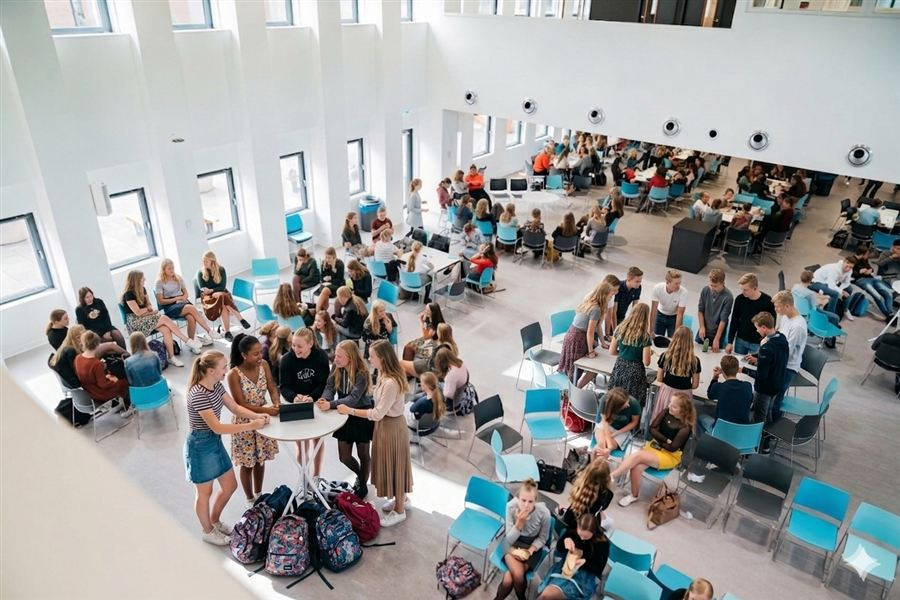

Welk lokaal zoek je?
Verdiepingen
Route
Tik op de kaart waar je nu staat. Sleep om te schuiven, knijp om te zoomen.
Waar wil je heen?
Kies een lokaal om de route te zien.
Live locatie staat uit
Zet live locatie aan om jezelf als blauwe stip op de kaart te zien.
Binnen werkt locatie het best met wifi aan en locatie op hoge nauwkeurigheid. Kies zelf de verdieping waar je bent.
Lokalen
Badges
1level
0 van 75 XP
Badges
Voortgang
1
Level 1
0 XP verdiend- Badges
- Verdiepingen bekeken
- Verschillende lokalen gekozen
Je voortgang staat alleen op deze telefoon.
Info
Zo werkt het
- Zoek je lokaal bij Lokalen, of kies een verdieping op home.
- Tik op de plattegrond waar je staat, of zet live locatie aan.
- Loop over de lijn. Zit je lokaal op een andere verdieping, dan loopt de lijn eerst naar de trap.
Privacy
Je locatie wordt alleen op je telefoon gebruikt voor de stip op de kaart. Er wordt niets verstuurd of opgeslagen.
Klopt er iets niet?
De plattegronden komen uit de bouwtekeningen. Mist er een deur of staat een lokaal op de verkeerde plek, laat het de docent of het project weten.
Gebouwenroute, versie 1.0, Hoornbeeck College Gouda